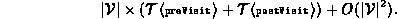
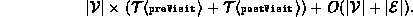
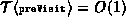
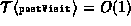
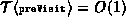
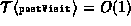

Data Structures and Algorithms
with Object-Oriented Design Patterns in Java
Data Structures and Algorithms
with Object-Oriented Design Patterns in JavaThe running time of the depth-first traversal method depends on the graph representation scheme used. The traversal visits each node in the graph at most once. When a node is visited, all the edges emanating from that node are considered. During a complete traversal enumerates every edge in the graph.
Therefore, the worst-case running time for the depth-first traversal of a graph is represented using an adjacency matrix is

When adjacency lists are used, the worst case running time for the depth-first traversal method is

Recall that for a sparse graph graph  .
If the sparse graph is represented using adjacency lists
and if  and 
the worst-case running time of the depth-first traversal
is simply
.
If the sparse graph is represented using adjacency lists
and if  and 
the worst-case running time of the depth-first traversal
is simply  .
.
 Copyright © 1998 by Bruno R. Preiss, P.Eng. All rights reserved.
Copyright © 1998 by Bruno R. Preiss, P.Eng. All rights reserved.